1 Tổng quan
Tài liệu này chủ yếu được sử dụng khi phản hồi khiếu nại của khách hàng, hướng dẫn người dùng thu thập thông tin, tái hiện và kiểm tra lỗi (troubleshoot), đồng thời điền phiếu vấn đề (ticket) một cách chính xác, nhằm đẩy nhanh quá trình tái hiện, định vị và giải quyết vấn đề, nhanh chóng khôi phục sản xuất và giảm thiểu thiệt hại cho khách hàng.
2 Thông tin cơ bản
Mô tả vấn đề: Hiện tượng, Tần suất
Tên dự án:
Người phản hồi:
Phiên bản gặp lỗi:
Ngày mong muốn giải quyết:
Lưu ý
Định dạng tên dự án như sau: Loại dự án-Khách hàng cuối (End User)-Nhà cung cấp thiết bị-Tên dự án/Trạm (Station)
ex： Alignment-Luxshare Jiashan-Jieshide-Dự án kiểm tra FCMXX
Loại dự án: Alignment, Inspection (Kiểm tra), Đo lường 2D, Đo lường 3D, Laser, Deep Learning, Phản hồi học tập (không liên quan đến sản xuất dự án)
Ví dụ
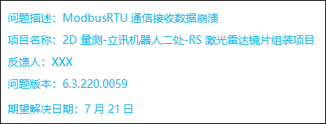
3 Thu thập tài liệu liên quan đến vấn đề
Khi gặp vấn đề, vui lòng ưu tiên sử dụng tài liệu này để kiểm tra sơ bộ, nếu vẫn không thể giải quyết, hãy phản hồi vấn đề càng sớm càng tốt! Nếu phiên bản đã cũ, vui lòng cập nhật phiên bản kịp thời nếu điều kiện cho phép!
Trước tiên hãy phân loại vấn đề theo nhóm lớn, đối chiếu xem hiện tượng có nhất quán hoặc gần giống không, tra cứu danh sách thu thập thông tin và các phương pháp liên quan để tiến hành thu thập và gửi lại thông tin. Khi vấn đề liên quan đến nhiều danh mục phân loại, cần thu thập tất cả thông tin được yêu cầu.
Ví dụ: Tại hiện trường phát hiện phần mềm bị Crash khi đổi tên Camera, thì cần thu thập thông tin theo hạng mục Crash và Vấn đề Camera (file dump, lịch sử thao tác, log thu nhận ảnh (grab log), model camera, v.v.)
3.1 Phần mềm không thể mở
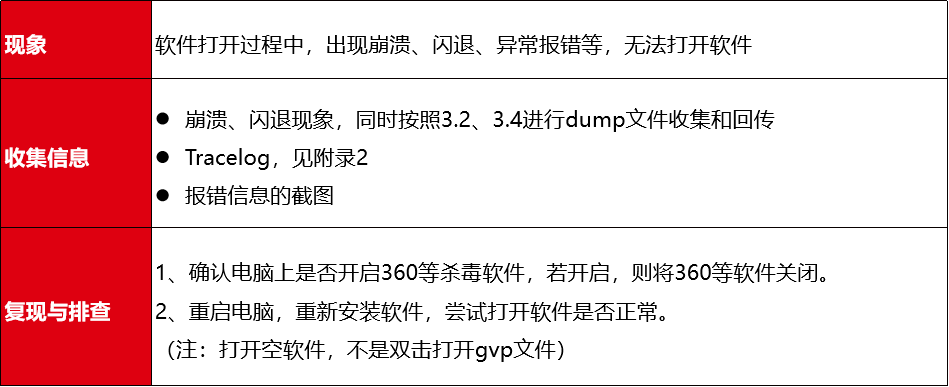
3.2 Phần mềm bị Crash
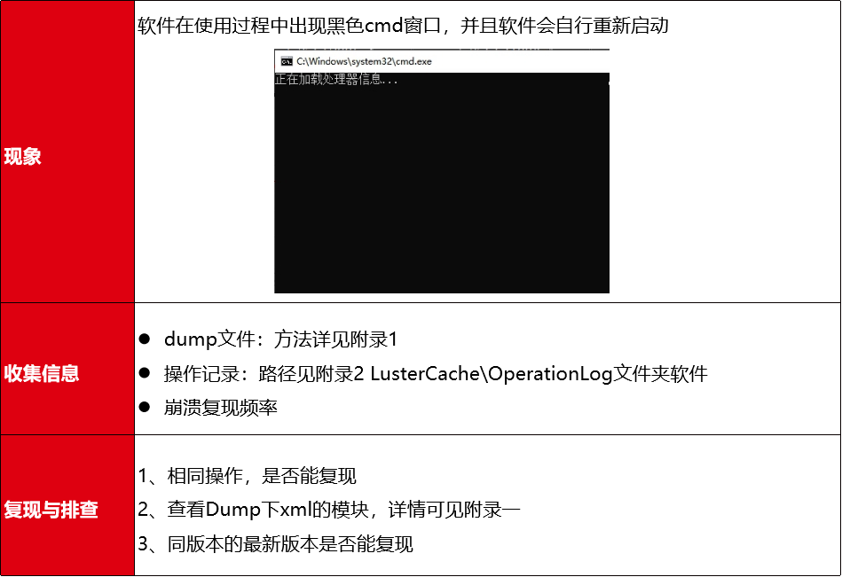
3.3 Phần mềm bị treo (Freeze)
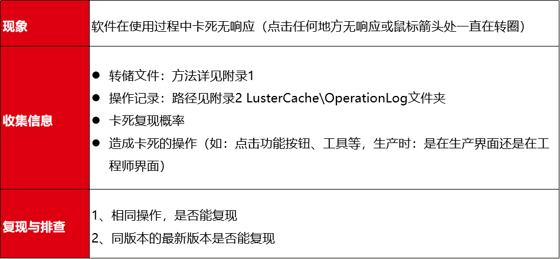
3.4 Phần mềm tự thoát (Force Close)
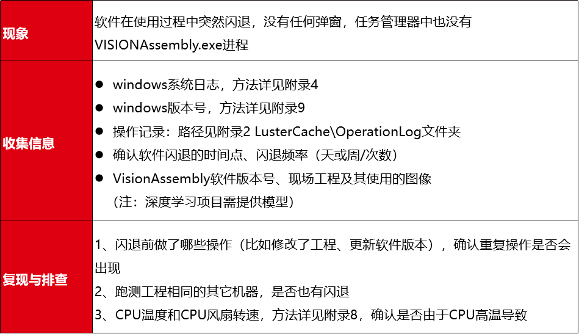
3.5 Phần mềm bị giật lag
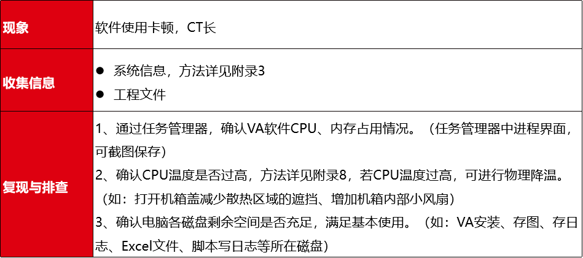
3.6 Thiếu công cụ phần mềm
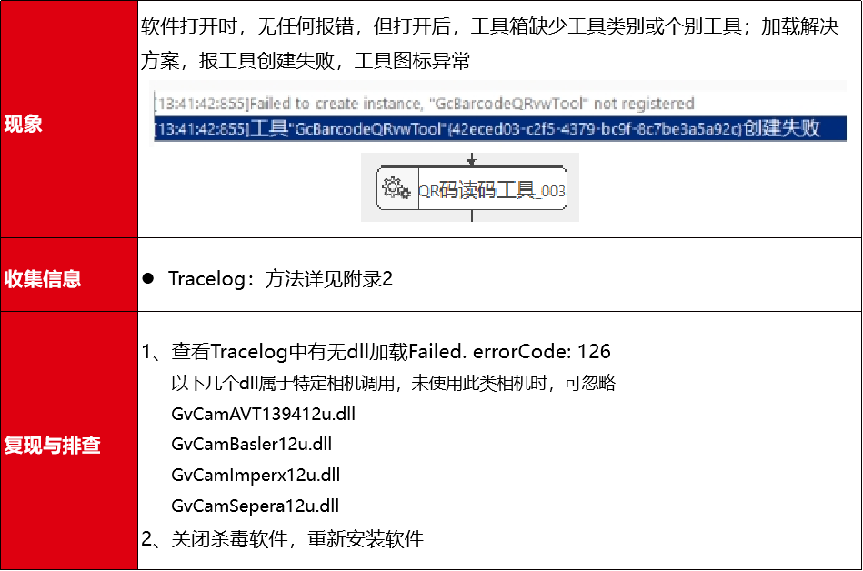
3.7 Vấn đề Camera 2D
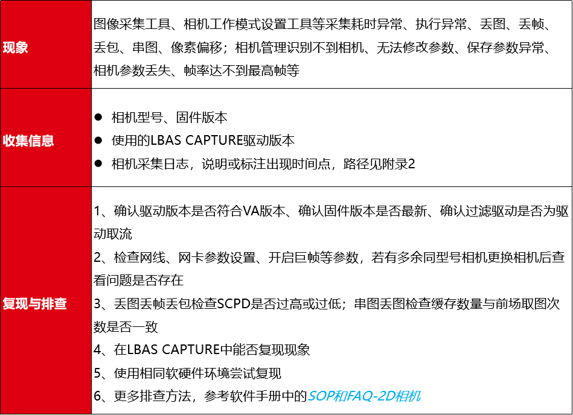
3.8 Vấn đề Camera 3D
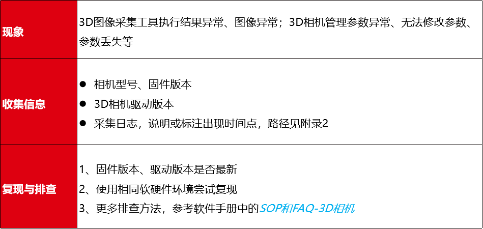
3.9 Vấn đề truyền thông (Communication)
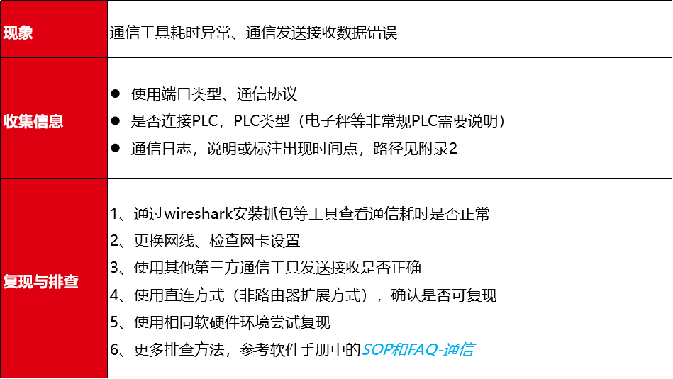
3.10 Lưu ảnh
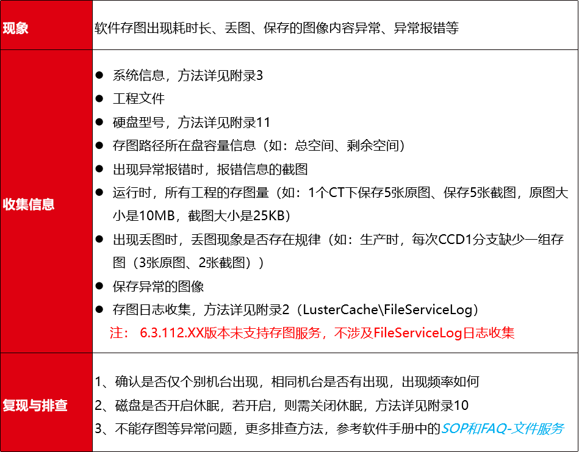
3.11 Vấn đề thời gian xử lý Deep Learning
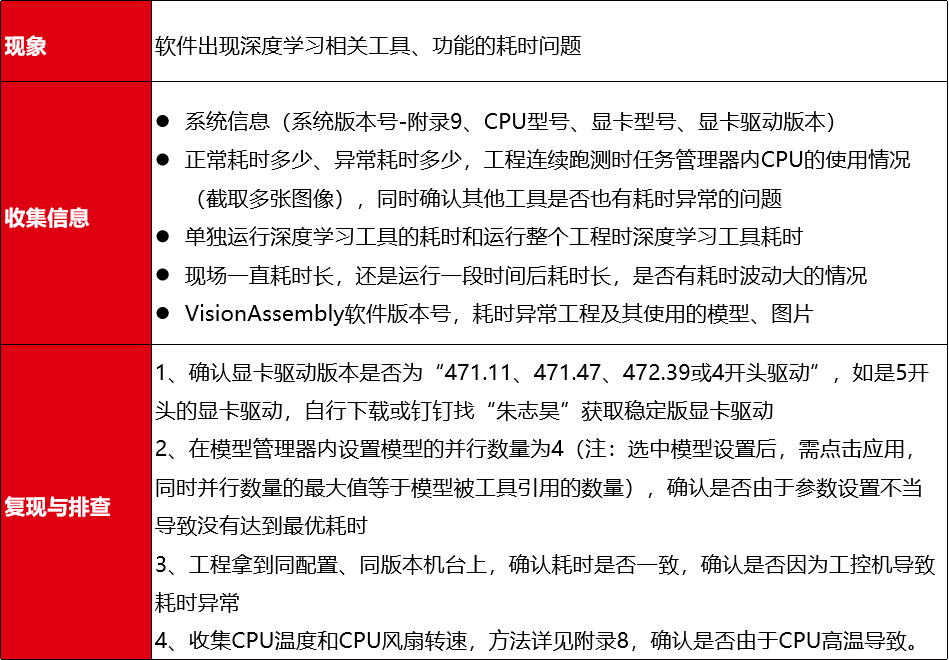
3.12 Dongle (Khóa cứng)
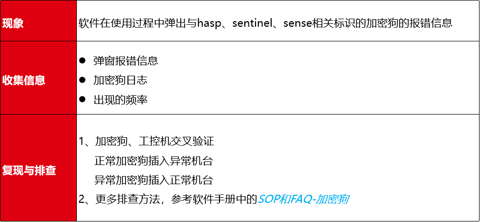
3.13 Các loại công cụ (Tools)
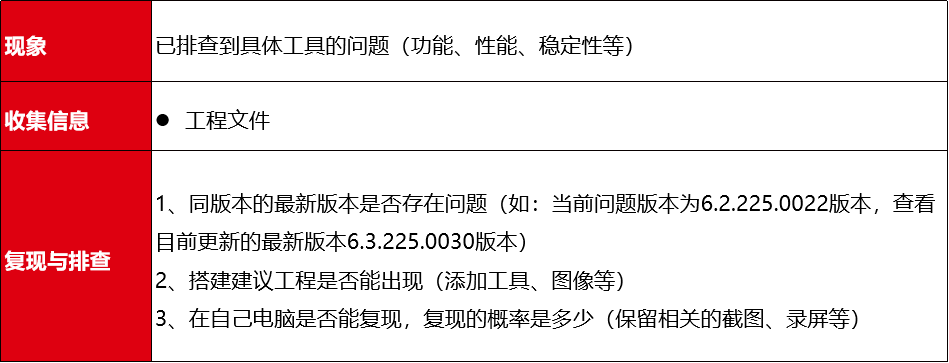
3.14 Các vấn đề khó khăn khác
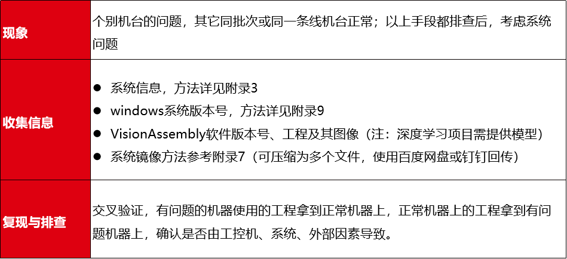
4 Nhập phiếu vấn đề trên ONES
4.1 Trên máy tính
4.1.1 Đăng nhập hệ thống ONES
Bước 1: Đăng nhập địa chỉ web https://ones.lusterinc.com
Bước 2: Nhấn vào biểu tượng “L”, chuyển sang chế độ đăng nhập LDAP/AD
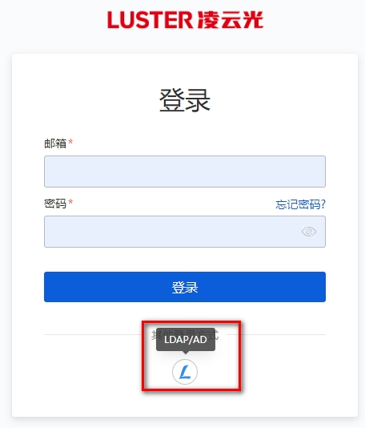
Bước 3: Sử dụng tài khoản LDAP/AD để đăng nhập, nhập tài khoản miền (domain account), mật khẩu miền để hoàn tất đăng nhập
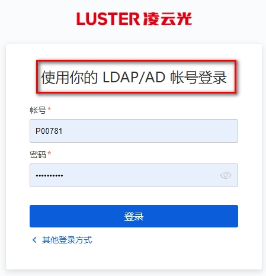
4.1.2 Nhập phiếu vấn đề
Bước 1: Chọn “Quản lý Dự án/Yêu cầu” trên thanh menu bên trái

Bước 2: Nhấn dấu “+” ở góc trên bên phải, Tạo mới hạng mục công việc (cũng có thể nhập hàng loạt hạng mục công việc, xem Phụ lục 6)
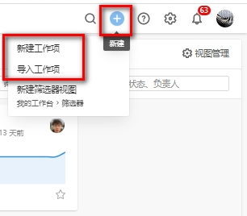
Bước 3: Dự án trực thuộc chọn Onsite Issue, loại hạng mục công việc chọn Bug-FB
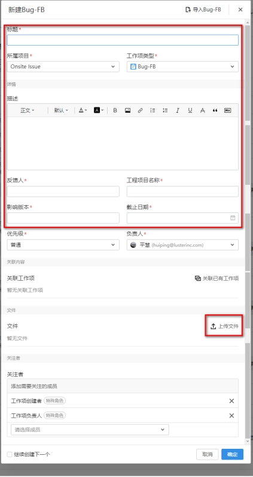
Bước 4: Điền thông tin trường dữ liệu - Tiêu đề, Mô tả, Người phản hồi, Tên dự án kỹ thuật, Phiên bản bị ảnh hưởng, Ngày hết hạn, trong đó định dạng tên dự án như sau
- Định dạng tên dự án như sau: Loại dự án-Khách hàng cuối (End User)-Nhà cung cấp thiết bị-Tên dự án/Trạm (Station)
ex： Alignment-Luxshare Jiashan-Jieshide-Dự án kiểm tra FCMXX
Loại dự án: Alignment, Inspection (Kiểm tra), Đo lường 2D, Đo lường 3D, Laser, Deep Learning, Phản hồi học tập (không liên quan đến sản xuất dự án)
Ví dụ
Bước 5: Tải lên tài liệu liên quan, với tệp nhỏ có thể nhấn vào “Tải lên tệp” như hình trên để tải lên, với tệp lớn (như: file project, dump, hình ảnh, file image hệ thống, v.v.) khuyến nghị tải lên Cloud: AnyShare://IVS23 3C产品部/3C产品发布/06-学习资料/ONES附件上传 (Tạo một thư mục đặt tên theo số phiếu, tải tệp đính kèm vào thư mục đó)
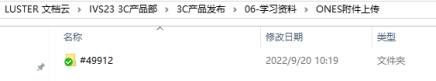
Lưu ý
Nếu các tệp như dump, file image hệ thống quá lớn, có thể gửi cho nhân viên kiểm thử (tester) liên quan thuộc bộ phận kiểm thử qua WeChat, DingTalk, Baidu Netdisk, v.v.
4.2 Trên điện thoại di động
4.2.1 Đăng nhập hệ thống ONES
Bước 1: Đăng nhập VPN (EasyConnect), tải và mở ứng dụng ONES
Bước 2: Nhấn vào Đăng nhập triển khai riêng tư (Private Deployment)
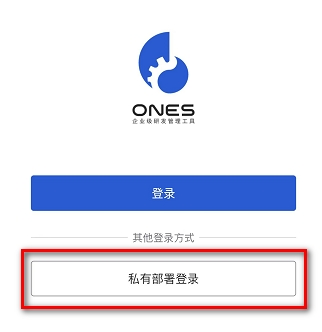
Bước 3: Cấu hình máy chủ theo hình dưới, nhấn “Bước tiếp theo”
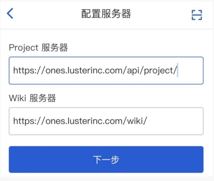
Bước 4: Nhấn vào đăng nhập bên thứ ba LDAP/AD
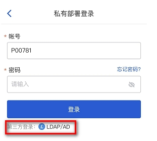
Bước 5: Nhập tài khoản miền, mật khẩu miền để đăng nhập, vào trang chủ
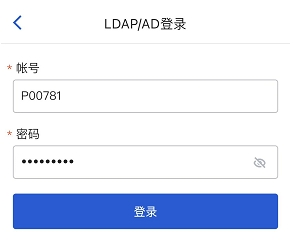
4.2.2 Nhập phiếu vấn đề
Bước 1: Tại trang chủ, nhấn dấu + ở góc dưới bên phải, Tạo mới hạng mục công việc
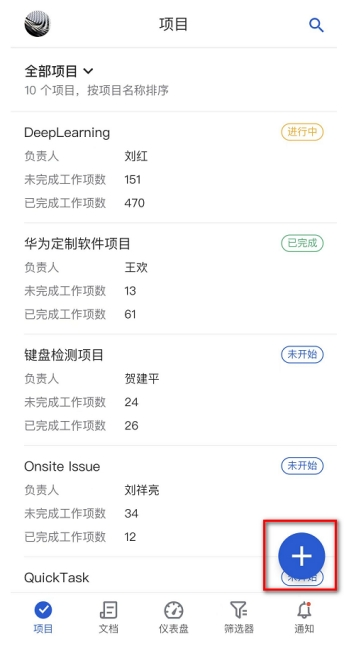
Bước 2: Điền thông tin trường dữ liệu cần thiết, nhấn dấu √ ở góc trên bên phải để gửi vấn đề (việc điền trường dữ liệu có thể tham khảo hướng dẫn nhập phiếu trên máy tính)
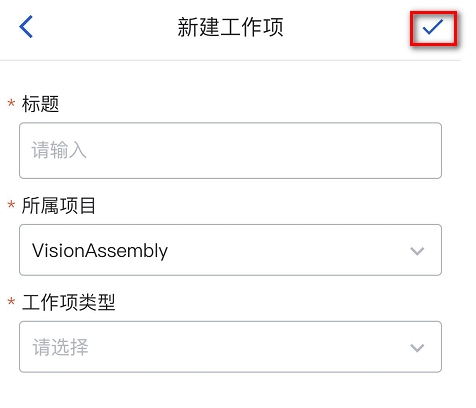
4.3 Xem phiếu do bản thân tạo
Bước 1: Sau khi đăng nhập, nhấn vào “Bộ lọc” (Filter) ở phía trên
Bước 2: Nhấn vào “Phiếu khiếu nại khách hàng” trong bộ lọc
Bước 3: Có thể xem tất cả phiếu khiếu nại khách hàng, hoặc xem phiếu do bản thân tạo
Bước 4: Có thể tìm kiếm vấn đề cụ thể trong vùng tìm kiếm ở góc trên bên phải
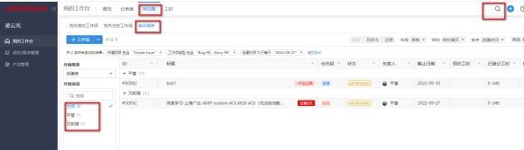
5 Phụ lục
5.1 Thu thập Dump
【Crash Dump】
Lưu ý
- Khi phần mềm bị Crash, hệ thống sẽ tự động tạo file dump và khởi động lại phần mềm, trong quá trình này tránh thao tác thủ công cho đến khi phần mềm khởi động xong.
- Dự án Deep Learning cần copy file dump trong thư mục, file dump trong tệp nén có thể bị hỏng.
- Bước 1: Tìm đến đường dẫn LusterCache\Dump
Đường dẫn LusterCache có thể xem trong tùy chọn hệ thống phần mềm, thường nằm ở phân vùng ổ cứng cuối cùng.
Bước 2: Tìm file zip được tạo vào thời điểm xảy ra crash, gửi cho bộ phận R&D (chỉ cần copy trực tiếp file nén zip, ví dụ: 00b2845d-6af1-42ad-ba84-96151b92feaa.zip)
Lưu ý
Dự án Deep Learning cần copy thư mục có tên trùng khớp với tên file nén
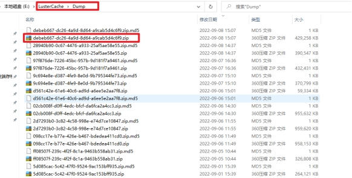
Bước 3: Tìm file xml trong đường dẫn LusterCache\Dump, mở file để xem thông tin mô-đun
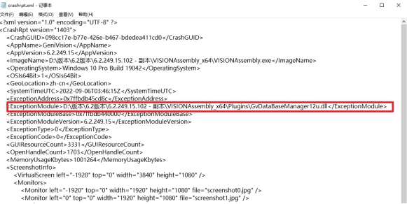
Bước 4: Kiểm tra xem dump có bị hỏng không
S1: Sử dụng công cụ WinDbg để mở dump, nhấn vào “File” ở góc trên bên trái → “Open dump file”
（Đường dẫn tải công cụ: AnyShare://IVS23 3C产品部/3C产品发布/04-驱动和工具/dump查看工具）
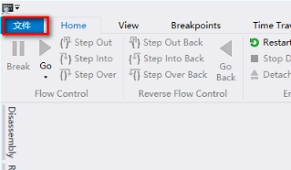
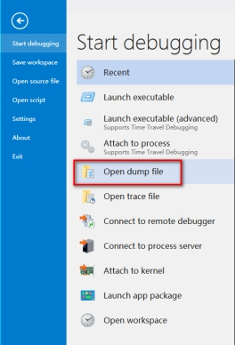
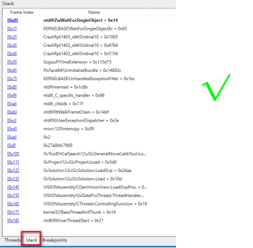
Dump bình thường
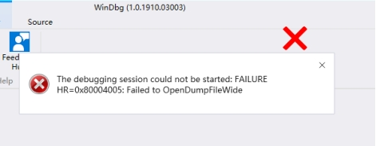
Dump bị hỏng cần thu thập lại
Bước 5: Xác nhận sơ bộ vị trí crash
S1: Chuẩn bị file PDB tương ứng với phiên bản phần mềm bị crash
S2: Mở Settings trên thanh menu
S3: Chọn “Debugging settings”
S4: Nhập đường dẫn file PDB vào Default symbol path
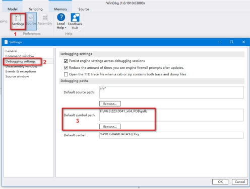
S5: Nhấn “OK”
S6: Kéo thả file dmp bị crash vào giao diện công cụ xem dump
S7: Đợi tải xong, xem vùng Stack (Ngăn xếp) ở góc dưới bên phải. Ví dụ hiển thị như sau: (Vui lòng gọi điện cho nhân viên R&D, thông báo nội dung stack hoặc chép lại toàn bộ nội dung hình dưới)
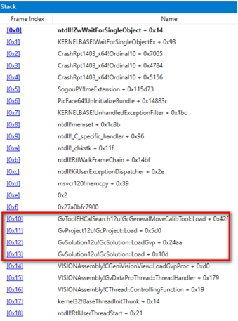
Phân tích:
Thông qua thông tin trong khung đỏ ở hình trên, có thể suy đoán crash xảy ra khi tải công cụ Motion Calibration (Hiệu chuẩn chuyển động), và xuất hiện khi tải toàn bộ giải pháp (Solution), cơ bản có thể khoanh vùng trong phạm vi 20-30 dòng code, nâng cao đáng kể hiệu quả định vị lỗi.
【Freeze Dump - Tạo file dump thủ công】
Bước 1: Mở Task Manager, tìm VisionAssembly.exe trong tab Details (Chi tiết)
Bước 2: Chuột phải chọn “Create dump file” (Tạo tệp kết xuất)
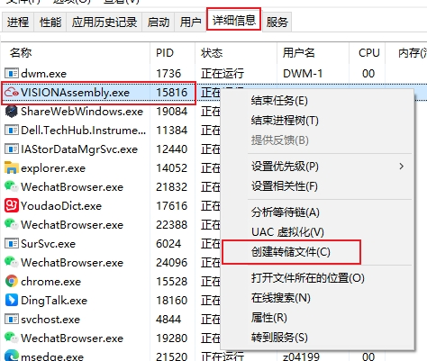
Bước 3: Gửi file dump đã tạo cho bộ phận R&D
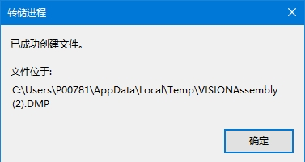
5.2 Thu thập Log
Bước 1: Trong tùy chọn hệ thống phần mềm, tìm thư mục dữ liệu LusterCache và mở ra
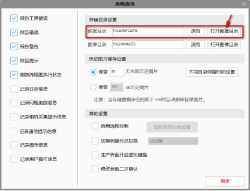
Bước 2: Tùy theo nhu cầu, chọn file log chính xác, gửi cho bộ phận R&D
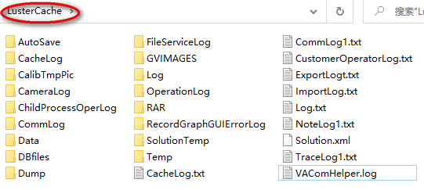
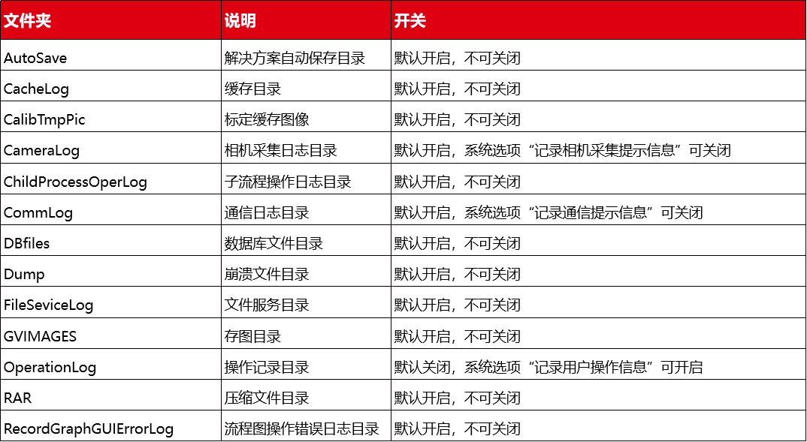
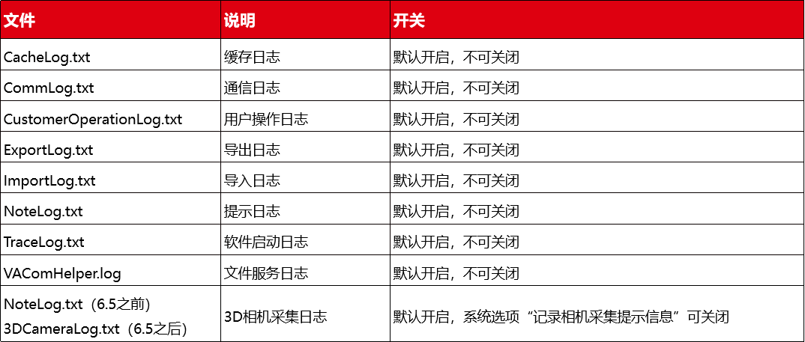
5.3 Thu thập thông tin hệ thống
5.4 Thu thập Log hệ thống
Bước 1: Chuột phải vào Computer - Manage (Quản lý)
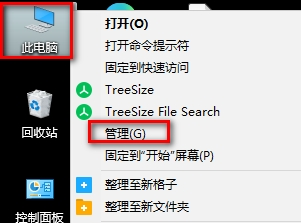
Bước 2: Nhấn Event Viewer (Trình xem sự kiện) → Windows Logs, chuột phải vào Application - Save All Events As (Lưu tất cả sự kiện dưới dạng), đổi tên thành “Application”, lưu lại
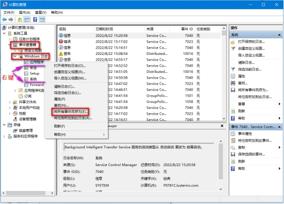
Bước 3: Chuột phải vào System - Save All Events As, đổi tên thành “System”, lưu lại (xem hình trên)
5.5 Thu thập thông tin Dongle (Khóa cứng)
【sentinel - Dongle cũ】
Bước 1: Bật log của Dongle
S1: Nhập localhost:1947 vào trình duyệt (không cần kết nối internet, nếu không mở được, hãy thử thêm http:// vào phía trước, lưu ý sử dụng dấu hai chấm tiếng Anh);
S2: Nhấn vào “Configuration” ở bên trái để vào giao diện cấu hình;
S3: Trong “Basic Settings”, tích chọn tất cả các mục được đánh dấu trong khung đỏ như hình dưới đây;
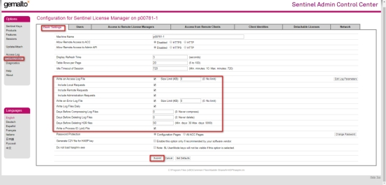
S4: Nhấn “Submit” ở cuối trang để lưu lại;
S5: Khởi động lại dịch vụ Sentinel License Manager hoặc khởi động lại máy tính;
S5-1: Chuột phải vào Computer chọn Manage (Quản lý);
S5-2: Trong phần “Services” (Dịch vụ), tìm “Sentinel License Manager”, chuột phải và chọn “Restart” (Khởi động lại);
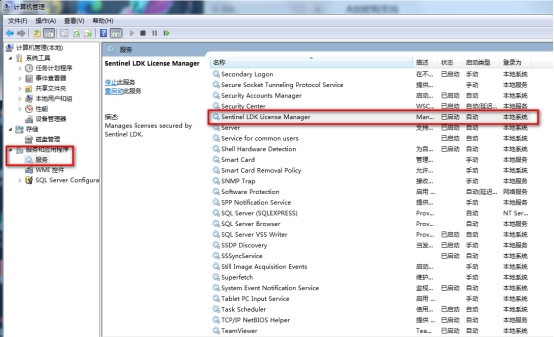
S6: Đường dẫn file log: C:\Program Files (x86)\Common Files\Aladdin Shared\HASP\log, gửi file log có định dạng tên như hình dưới về bộ phận R&D để hỗ trợ phân tích định vị vấn đề.
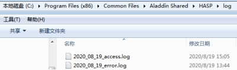
Bước 2: Nhấn đúp vào công cụ LDKDiagnosticTool_ENDUSER, sẽ tạo ra file nén tương ứng, tên file tương tự Output_LDT_20220819-205713.zip
Đường dẫn tải công cụ
AnyShare://IVS23 3C产品部/3C产品发布/04-驱动和工具/加密狗/sentinel/LDKDiagnosticTool_ENDUSER_v1.5.zip
【sense - Dongle mới】
5.6 Tạo mới/Nhập (Import) phiếu vấn đề hàng loạt
Tạo mới hàng loạt
Bước 1: Đăng nhập hệ thống ONES
Bước 2: Chọn “Quản lý Dự án/Yêu cầu” trên thanh menu bên trái
Bước 3: Chọn “Onsite Issue” trong danh sách tất cả dự án
Bước 4: Nhấn vào “Bug-FB”

Bước 5: Nhấn vào “Tạo mới hàng loạt” trong danh sách thả xuống của “Bug-FB”
Bước 5: Điền thông tin các trường dữ liệu tương ứng, nhấn hoàn thành
Hướng dẫn điền trường dữ liệu (Các trường trên đều là bắt buộc)
Tiêu đề: Tóm tắt sơ lược vấn đề
Người phụ trách: Ping Hui
Tên dự án kỹ thuật: Tham khảo “2 Thông tin cơ bản”
Thêm\Xóa, số lượng phiếu vấn đề tạo mới
Bổ sung thông tin mô tả (Ví dụ: điền thao tác, tần suất...)
Cách 1: Sau khi tạo hàng loạt xong, tiến hành bổ sung thông tin mô tả
Bước 1: Mở phiếu vấn đề cụ thể đã tạo, bổ sung thông tin mô tả
Lưu ý
Trong phần mô tả có thể chèn hình ảnh minh họa
Cách 2: Khi tạo hàng loạt, tiến hành bổ sung thông tin mô tả (Mặc định trường thông tin mô tả không hiển thị)
Bước 1: Nhấn vào “Chọn thuộc tính" ở góc trên bên phải
Bước 2: Trong các thuộc tính tùy chọn, tích chọn “Mô tả", nhấn Đồng ý/Xác nhận
Bước 3: Điền thông tin vào trường mô tả
Lưu ý
Chỉ có thể điền nội dung văn bản, không thể chèn hình ảnh; Đây là mục không bắt buộc
Nhập phiếu vấn đề hàng loạt (Import)
Bước 1: Tải xuống “Template nhập khiếu nại ONES” kể trên
Bước 2: Điền thông tin trường dữ liệu tương ứng
Hướng dẫn template nhập khiếu nại (Các trường trong template đều là bắt buộc)
(1) Các trường tô vàng thì điền nội dung thống nhất
(2) Ngày hết hạn: Định dạng là 2022-XX-XX
Ví dụ như sau:
(3) Tên dự án kỹ thuật: Tham khảo “2 Thông tin cơ bản”
Bước 3: Đăng nhập hệ thống ONES
Bước 4: Chọn “Quản lý Dự án/Yêu cầu” trên thanh menu bên trái

Bước 5: Chọn “Onsite Issue” trong danh sách tất cả dự án

Bước 6: Nhấn vào “Bug-FB”
Bước 7: Nhấn vào “Nhập Bug-FB” trong danh sách thả xuống của “Bug-FB”
Bước 8: Nhấn vào “Chọn tệp”
Bước 9: Chọn file “Template nhập khiếu nại ONES.xlsx” đã điền, nhấn “Bước tiếp theo”
Bước 10: Nhấn “Bắt đầu nhập” (Sau khi nhập sẽ tự động khớp trường dữ liệu)
Bước 11: Nhấn “Xác nhận”
Bước 12: Bên trái giao diện sẽ xuất hiện trình quản lý tiến độ nhập
5.7 Tạo file image hệ thống
Công cụ và tài liệu hướng dẫn, đường dẫn tải xuống tại Cloud công ty: AnyShare://IVS23 3C产品部/3C产品发布/03-FAQ/制作系统镜像
5.8 Xem nhiệt độ và tốc độ quạt CPU
Bước 1: Giải nén tệp “AIDA64”
Đường dẫn tải xuống tại Cloud công ty: AnyShare://IVS23 3C产品部/3C产品发布/03-FAQ/查看CPU温度和转速工具
Bước 2: Mở gói nén, tìm tệp “aidi64.exe” và nhấp đúp để mở
Bước 3: Sau khi giao diện phần mềm hiện ra, lần lượt nhấp vào “Computer -> Sensor (Lưu ý: sẽ cần một chút thời gian để lấy thông tin cảm biến)”. Cần chụp lại nhiều ảnh màn hình.
5.9 Kiểm tra số phiên bản hệ thống Windows
Bước 1: Nhấn tổ hợp phím “win+e”, hiển thị cửa sổ “Run”
Bước 2: Nhập “winver” rồi nhấp “OK”, sau khi nhấp OK sẽ hiển thị phiên bản Windows, chụp màn hình và lưu lại.
5.10 Kiểm tra thời gian ngủ của ổ cứng (Tắt chế độ ngủ)
Bước 1: Mở Control Panel, nhấp vào “Power Options” (Tùy chọn nguồn điện)
Bước 2: Nhấp vào “Change when the computer sleeps” (Thay đổi thời gian ngủ của máy tính) ở bên trái
Bước 3: Nhấp vào “Change advanced power settings” (Thay đổi cài đặt nguồn nâng cao)
Bước 4: Trong cửa sổ Power Options, sửa tất cả thời gian thành 0 (sau khi sửa sẽ hiển thị là Never/Không bao giờ)
Bước 5: Nhấp “Apply” (Áp dụng), rồi nhấp “OK”
5.11 Kiểm tra model ổ cứng
Bước 1: Chọn Desktop (Màn hình chính), chuột phải vào My Computer (Máy tính của tôi), chọn “Properties” (Thuộc tính)
Bước 2: Nhấp vào “Device Manager” (Trình quản lý thiết bị) ở bên trái
Bước 3: Nhấp vào “Disk drives” (Ổ đĩa) (thông tin hiển thị chính là model ổ cứng)